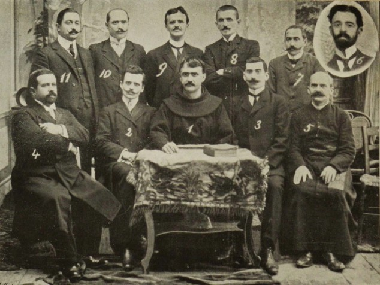
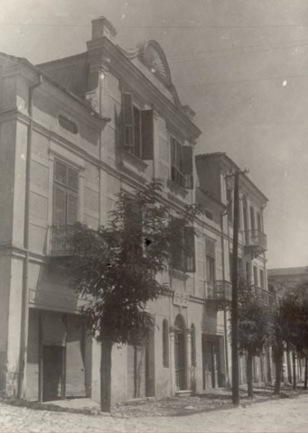
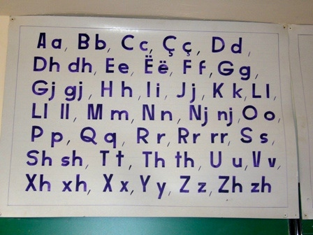
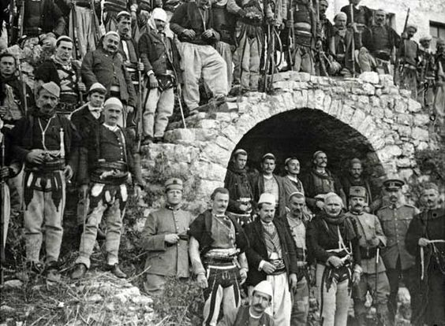

Congress of Manastir
The long fight for an Alphabet
The Congress of Manastir was an academic conference held in the city of Manastir (now Bitola) from November 14 to 22, 1908, with the goal of standardizing the Albanian alphabet.
November 22 is now a commemorative day in Albania, Kosovo and North Macedonia, as well as among the Albanian diaspora, known as Alphabet Day.
Prior to the Congress, the Albanian language was represented by a combination of six or more distinct alphabets, plus a number of sub-variants.

(1) The main members of the commission
How it happened
The speeches of the first two days with regard to the alphabet were general in character, and helped to create the atmosphere in which to carry out the serious work. The representatives understood the importance of unity, regardless which alphabet was chosen. Gjergj Fishta, who praised the development of the Bashkimi alphabet, declared: “I have not come here to defend any one of the alphabets, but I have come here to unite with you and adopt that alphabet which the Congress decides upon as most useful for uplifting the people”. The audience was deeply moved by Fishta. Hodja Ibrahim Effendi, a Muslim clergyman, rushed to Fishta and embraced him with tears in his eyes.
At the beginning of the Congress, the delegates elected a commission consisting of eleven members (four Muslims, four Orthodox and three Catholics) to make a decision before the other delegates arrived. Gjergj Fishta was elected chairman of the commission, Parashqevi Qiriazi chairwoman and Mit'hat Frashëri its vice-chairman. Luigj Gurakuqi became the secretary of the commission while the other five members of the commission were Bajo Topulli, Ndre Mjeda, Shahin Kolonja, Gjergj Qiriazi and Sotir Peçi. Mit'hat Frashëri was also elected chairman of the congress. The delegates took a besa to accept the decision of the committee. The committee deliberated on the question of a common alphabet for three successive days. They promised, through said besa, that nothing would be known before the ultimate decision.
However, the Congress was unable to choose one single alphabet and instead opted for a compromise solution, using both the Istanbul and Bashkimi alphabets, but with some changes to reduce the differences between them. Usage of the alphabet of Istanbul declined rapidly and it became obsolete over the following years as Albania declared its independence. The Bashkimi alphabet is the predecessor of the official alphabet for the Albanian language in use today. Gjergj Fishta noted that German had two written scripts to those disappointed, as here there not one alphabet was chosen, but two. After some discussion, the decision for the use of both the Bashkimi and Istanbul alphabets was accepted by all the delegates. It was also agreed to have every local Albanian authority report to the Union Association, monthly, about developments in their areas. Another agreement resulted in another congress in Ioannina on July 10, 1910.

(2) The bulding in Manastir where the Congress was held
What it meant
The adoption of a Latin character-based Albanian alphabet was considered an important step for Albanian unification. Some Albanian Muslims and clerics, preferring an Arabic-based alphabet, expressed their opposition towards the Latin script due to concerns that it would undermine ties with the Muslim world. The situation was also alarming for the Ottoman government, as the Albanians were the largest Muslim community in the European part of the empire, apart from the population of Istanbul. The Albanian national movement was regarded as proof that others also felt a relationship to the nation, not just Christians, and that Islam alone could not keep Ottoman Muslims united.
The Congress of Manastir represents one of the most important events for Albanians, and the most important after the establishment the League of Prizren, not only because of the decisions made, but also because those decisions were to be legally implemented by the Ottoman authorities. In 2008, festivities were organized in Bitola, Tirana and Pristina to celebrate the centenary of the congress.

(3) The 36 letters of the Albanian Alphabet
Ottoman reaction
As a result, the Ottoman Empire organised a congress in Debar in 1909, with the intention that Albanians formally declare themselves as Ottomans, promising to defend their territorial sovereignty and adopting an Arabic-based alphabet. They faced strong opposition from nationally minded Albanians, and the Albanian element took total control of the proceedings. While the congress was progressing, members of the CUP in Tirana orchestrated a demonstration, criticising the adoption of a Latin-based alphabet to the local branch of the Union Association. Talat Bey, the interior minister, claimed that the Albanian population supported the use of the Ottoman Turkish alphabet, and not a Latin-based one. The Union Association did not stop the demonstration, instead organizing a congress with 120 attendees in Elbasan.
Due to the alphabet matter and other Young Turk policies, relations among Albanian elites, nationalists, and Ottoman authorities broke down. Though at first Albanian nationalist clubs were not curtailed, the demands for political, cultural, and linguistic rights eventually made the Ottomans adopt measures to repress Albanian nationalism, which resulted in two Albanian revolts (1910 and 1912) towards the end of Ottoman rule.
The Congress of Manastir represents one of the most important events for Albanians, and the most important after the establishment the League of Prizren, not only because of the decisions made, but also because those decisions were to be legally implemented by the Ottoman authorities. In 2008, festivities were organized in Bitola, Tirana and Pristina to celebrate the centenary of the congress. In all schools in Albania, Kosovo and Albanian-majority areas in North Macedonia, the first school hour was dedicated to honouring the Congress and teaching students about it.

(4) Albanian fighters in Durrës
Participants
The participants of the congress were prominent figures of the cultural and political life from Albanian-inhabited territories in the Balkans, as well as throughout the Albanian diaspora. There were fifty delegates, representing twenty-three Albanian-inhabited cities, towns, and cultural and patriotic associations of whom thirty-two had voting rights in the congress, and eighteen were observers.
Below is the list of the most prominent participants with the right to vote:
-
Gjergj Fishta
- Midhat Frashëri
- Luigj Gurakuqi
- Gjergj Qiriazi
- Dom Ndre Mjeda
- Grigor Cilka
- Dhimitër Buda
- Shahin Kolonja
- Sotir Peçi
- Bajo Topulli
- Nyz'het Vrioni